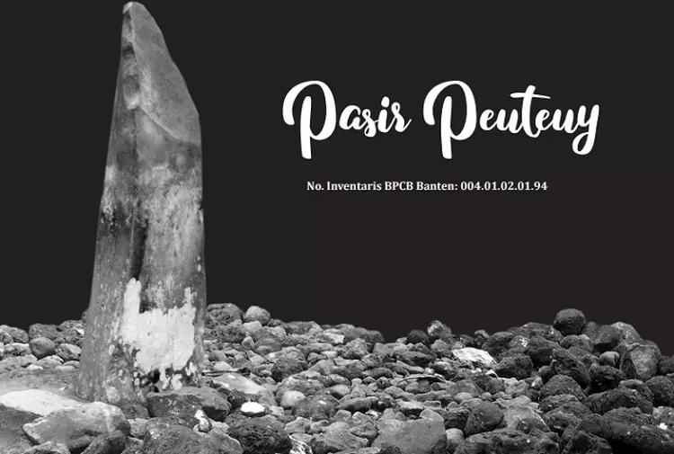
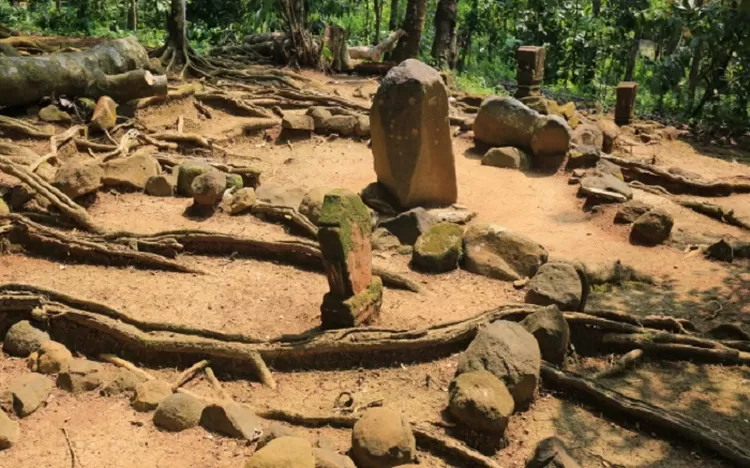
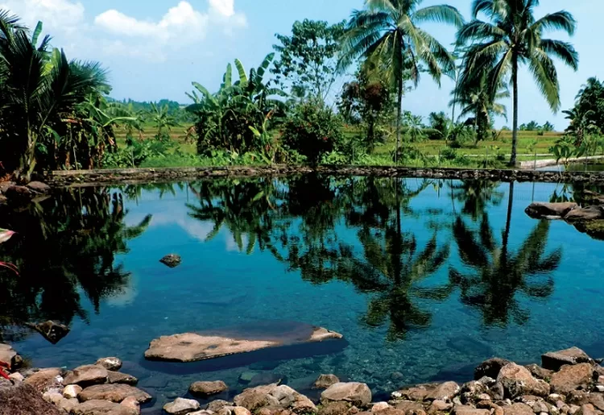
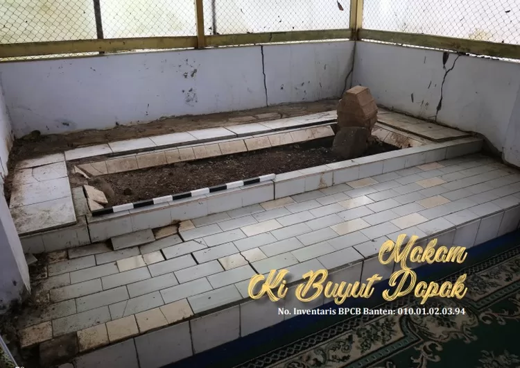
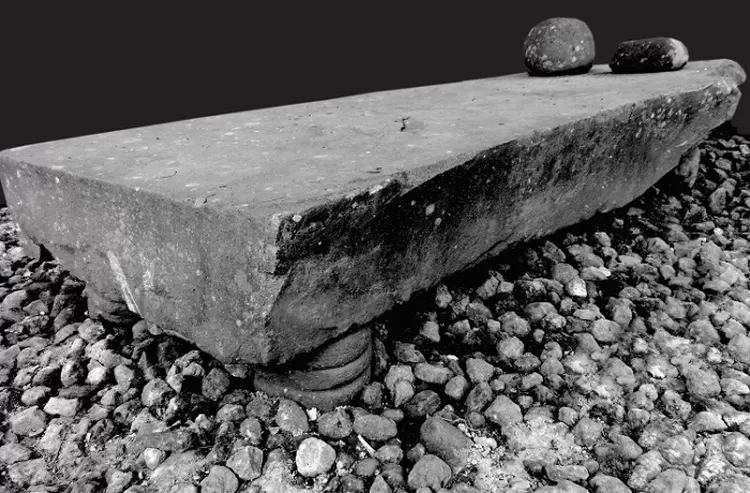
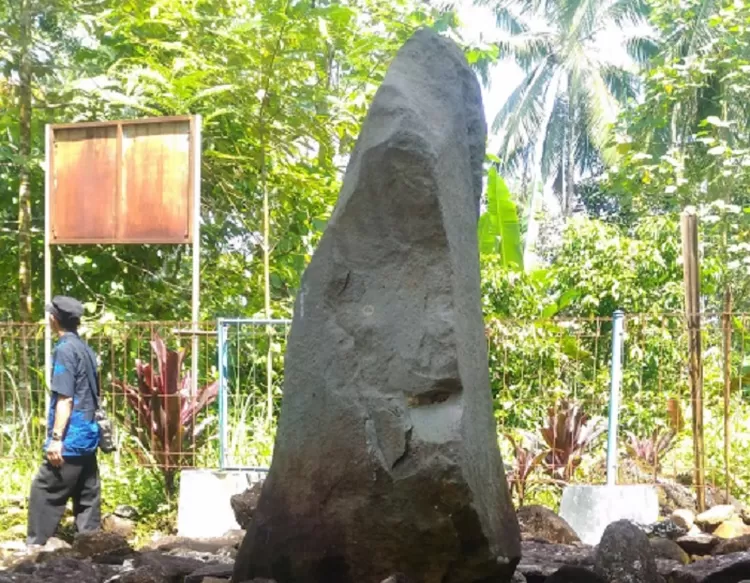
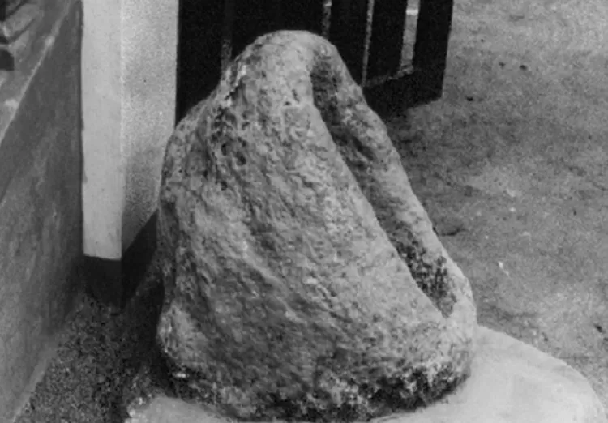
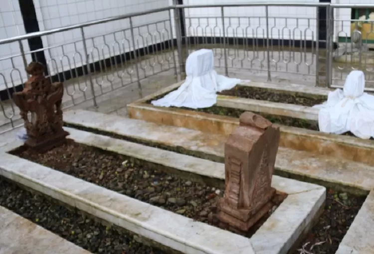

1. Situs Pasir Peuteuy

Situs Pasir Peuteuy terletak di lereng Gunung Karang dan berada di lahan milik Perhutani di Kampung Pasir Peuteuy, Desa Pasir Peuteuy, Kecamatan Cadasari, Kabupaten Pandeglang. Tinggalan cagar budaya pada situs ini adalah menhir yang secara keseluruhan ada sembilan buah dengan tata letak terpola berdasarkan ukuran menhir. Menhir merupakan peninggalan cagar budaya yang berkembang pada masa megalitik. Pada hakekatnya tinggalan cagar budaya yang berasal dari masa megalitik ini di buat karena adanya konsep kepercayaan adanya kehidupan setelah kematian. Berdasarkan konsep tersebut para pendukung tradisi megalitik melakukan pemujaan kepada nenek moyang. Menhir yang paling besar pada situs ini memiliki ukuran tinggi ± 150 cm dan yang lainnya berukuran lebih kecil.
2. Situs Majau

Situs Majau terletak di Desa Majau, Kecamatan Saketi, Kabupaten Pandeglang. Masyarakat sekitar menyebut tempat ini dengan sebutan Makam Keramat Ki Buyut Dalem. Tokoh “Ki Buyut Dalem” dipercaya masyarakat setempat sebagai tokoh penyebar agama Islam di daerah Pandeglang dan sekitarnya. Di situs ini terdapat menhir yang dikelilingi batu “temu gelang” dan empat makam. Ada menhir di Situs Majau berukuran lebar 60 cm dan tinggi 90 cm, dikelilingi bolder batu yang dalam istilah prasejarah disebut dengan “batu temu gelang”. Masyarakat setempat menyebut menhir ini sebagai Ki Buyut Sepotong.
3. Situs Citaman

Situs Citaman berada di Desa Sukasari, Kecamatan Pulosari, Kabupaten Pandeglang, Provinsi Banten. Desa Sukasari terletak di kaki Gunung Pulosari sehingga menjadikan alam Sukasari terlihat sangat asri dan subur. Keberadaan Gunung Pulosari telah lama dikenal oleh masyarakat sebagai gunung yang disucikan, misalnya dalam naskah Babad Banten yang mengisahkan Maulana Hasanuddin melakukan perjalanan ke Gunung Pulosari dalam rangka menaklukan kerajaan Banten Girang, sehingga Gunung tersebut di keramatkan. Situs ini merupakan mata air dan kolam dengan berbagai ukuran dan bentuk. Keberadaan kolam-kolam tersebut diduga sebagai tempat awal mensucikan diri sebelum ritual keagamaan berlangsung di atas bukit tempat Batu Goong berada.
4. Makam Ki Buyut Papak

Cerita turun temurun yang beredar di masyarakat setempat, Ki Buyut Papak adalah utusan Sultan Maulana Hasanudin yang diberi tugas menyebarkan Islam di daerah Banten Tengah. Selain dikenal sebagai penyebar Islam di wilayah Banten Tengah, Ki Buyut Papak juga dikenal sebagai pande besi. Beliau pada saat itu membuat gelang dari besi. Menurut folklore, dari beliaulah muncul kata Pandeglang, yakni dari kata “pande” dan “gelang” Makam Ki Buyut Papak terletak di Kampung Kadutokek, Kelurahan Pandeglang, Kecamatan Pandeglang, Kabupaten Pandeglang,
5. Situs Batu Ranjang

Situs Batu Ranjang merupakan salah satu peninggalan megalitik yang berada di lereng Gunung Pulosari. Situs Batu Ranjang secara administratif terletak di Kampung Cidaresi, Desa Batu Ranjang, Kecamatan Cipeucang, Kabupaten Pandeglang, Provinsi Banten. Pada Situs Batu Ranjang ini terdapat sebongkah batu andesit dengan bagian atas rata menyerupai tempat tidur atau biasa disebut sebagai dolmen. Dalam tradisi megalitik, dolmen memiliki dua fungsi utama yaitu sebagai kuburan dan tempat pemujaan.
6. Situs Sanghyang Heuleut

Situs Sanghyang Heuleut berada di Desa Kaduhejo, Kecamatan Pulosari, Kabupaten Pandeglang, Provinsi Banten dan berdekatan dengan Situs Sanghyang Dengdek. Situs Sanghyang Heuleut dikelilingi oleh perkebunan warga, di sisi utara terdapat Sungai Cirahagung dan sisi selatan terdapat Sungai Cisata. Situs Sanghyang Heuleut merupakan batu besar yang berdiri tegak atau biasa disebut dengan menhir. Terbuat dari bahan batu andesit berpori-pori padat.
7. Batu Tongtrong

Batu Tongtrong merupakan salah satu peninggalan megalitik yang berada di lereng Gunung Pulosari. Batu Tongtrong saat ini berada di halaman sebuah mushola. Batu Tongtrong terletak di Kampung Cidaresi, Desa Batu Ranjang, Kecamatan Cipeucang, Kabupaten Pandeglang, Provinsi Banten. Batu Tongtrong terbuat dari batuan andesit dengan ukuran tinggi ± 55 cm dan lebar ± 24 cm. Batu Tongtrong atau masyarakat sekitar menyebutnya sebagai batu kentongan, sekilas nampak seperti bentuk sebuah “kentongan”.
8. Makan Pendiri Masjid Cikaduen

Makam Pendiri Masjid Cikadueun terletak di dalam komplek Masjid Cikadueun yang secara administrasi terletak di Kampung Cikadueun, Desa Cikadueun, Kecamatan Cipeucang, Kabupaten Pandeglang, Provinsi Banten. Tokoh yang dimakamkan pada Makam Cikadueun adalah Syekh Maulana Mansur yang dikaitkan dengan Sultan Haji atau Sultan Abu al Nasri Abdul al Qahar, Sultan Banten ke tujuh yang merupakan putera Sultan Ageng Tirtayasa.
Sumber Konten : https://www.nusantara62.com/ragam/pr-3716442636/27-cagar-budaya-di-pandeglang-nomor-16-makam-tokoh-penentu-nama-kabupaten-ini?page=4#google_vignette